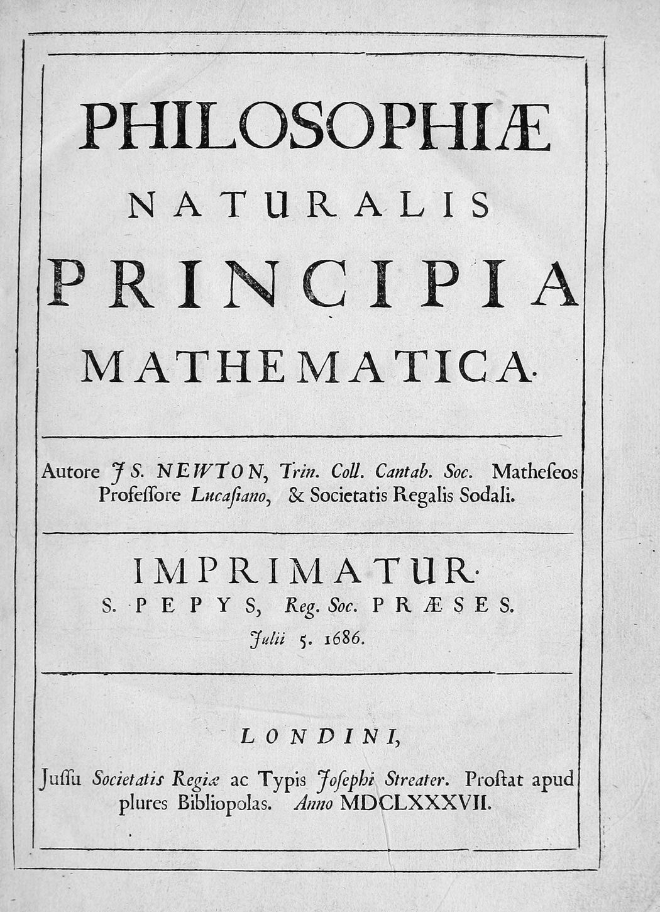

---
course: va1
chapter: va1-4
tags: [泰勒公式]
difficulty: 2
answer: $-\dfrac{1}{3}$
---
求极限……写成文件
一道题一个 Markdown 文件。开头几行写清章节、标签、难度和答案，正文就是题面和解析。
两门课
一张考纲
这不是一份笔记合集。范围先画出来：微积分停在 4.3 节泰勒公式，线性代数停在向量组的秩之前。线以内的章节有要点、有题；线以外的章节灰着，等期末再补。
每一道题是一个 Markdown 文件，带标签、难度和完整解析，改一个文件就能改一道题。图片是 Brook Taylor 的铜版像——他的公式正好是这次期中的终点。
期中不是「整本书」，是一条线。下面这条脊是两门课的全部章节，颜色停在考纲的边界上。

牛顿《自然哲学的数学原理》1687 年初版扉页，公有领域。微积分从这一页开始，你的期中停在 4.3 节。
考的东西都有出处。壳子里翻出来的几页纸，比任何一句「数学很美」都合适。


题目不是写死在页面里的。它先是一个 Markdown 文件，再是一个 issue，最后才变成你看到的这一页。
---
course: va1
chapter: va1-4
tags: [泰勒公式]
difficulty: 2
answer: $-\dfrac{1}{3}$
---
求极限……一道题一个 Markdown 文件。开头几行写清章节、标签、难度和答案，正文就是题面和解析。
[题目投稿] 泰勒公式求极限
课程 微积分 A1
章节 导数应用
难度 2 / 4
标签 泰勒公式 · 极限计算
题面 \( ... \)
解析 \( ... \)
label: question-submission投稿页把这些填好，一键打开 GitHub 的 issue 表单；也可以下载 .md 直接交给管理员。
content/
questions/
va1/
va1-001.md
va1-002.md
…
la/
la-001.md
…
notes/
va1/va1-4.md
合并后自动出现在：
题库 / 标签页 / 第 4 章管理员合并后重新构建，题目进入题库、标签页和对应章节，范围和统计一起更新。
关于范围、题目来源和投稿，你大概会先问这几件事。